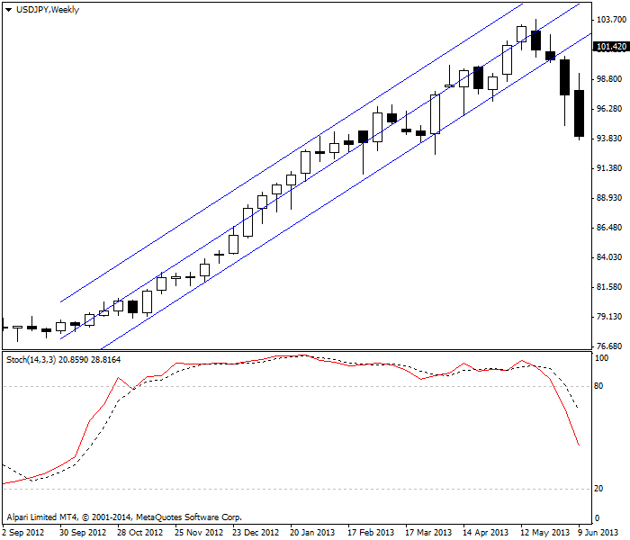
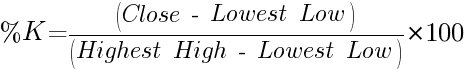
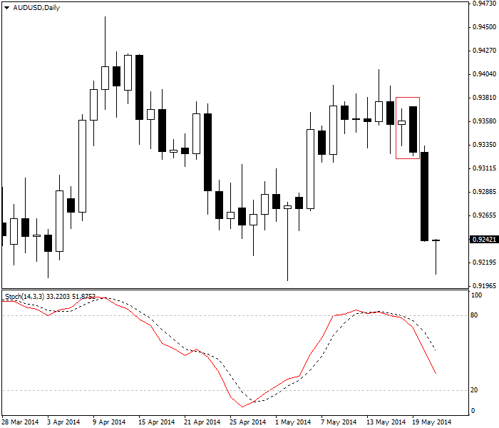

<!DOCTYPE html>
<html>
</html>
<head>
  <meta charset="utf-8">
  <meta http-equiv="X-UA-Compatible" content="IE=edge">
  <title>外汇站（fx-z.com） - 随机震荡指标</title>
  <meta name="description" content="">
  <meta name="viewport" content="width=device-width, initial-scale=1">
  <meta name="robots" content="all,follow">
  <!-- Bootstrap CSS-->
  <link rel="stylesheet" href="vendor/bootstrap/css/bootstrap.min.css">
  <!-- Font Awesome CSS-->
  <link rel="stylesheet" href="vendor/font-awesome/css/font-awesome.min.css">
  <!-- Google fonts - Roboto-->
  <link rel="stylesheet" href="https://fonts.googleapis.com/css?family=Roboto:400,300,700,400italic">
  <!-- owl carousel-->
  <link rel="stylesheet" href="vendor/owl.carousel/assets/owl.carousel.css">
  <link rel="stylesheet" href="vendor/owl.carousel/assets/owl.theme.default.css">
  <!-- theme stylesheet-->
  <link rel="stylesheet" href="css/style.default.css" id="theme-stylesheet">
  <!-- Custom stylesheet - for your changes-->
  <link rel="stylesheet" href="css/custom.css">
  <!-- Favicon-->
  <link rel="shortcut icon" href="img/favicon.png">
  <!-- Tweaks for older IEs--><!--[if lt IE 9]>
    <script src="https://oss.maxcdn.com/html5shiv/3.7.3/html5shiv.min.js"></script>
    <script src="https://oss.maxcdn.com/respond/1.4.2/respond.min.js"></script><![endif]-->
</head>
<body>
  <div id="all">
    <div class="container-fluid">
      <div class="row row-offcanvas row-offcanvas-left"> 
        <!--   *** SIDEBAR ***-->
        <div id="sidebar" class="col-md-4 col-lg-3 sidebar-offcanvas">
          <div class="sidebar-content">
            <h1 class="sidebar-heading"> <a href="https://fx-z.com">fx-z.com</a></h1>
            <p class="sidebar-p">介绍外汇相关的基本知识，告诉您如何进行自己的技术面和基本面分析，讲解先进的交易理念，并且为您阐述失败交易者与专业交易者之间的真正区别。 </p>
            <p class="sidebar-p">通过这些课程的学习，您将学会如何根据自己的优势来应用情绪分析，还将了解真实世界的事件会对货币汇率产生什么影响，央行在外汇市场中所发挥的作用，以及交易者在颇受欢迎的即期外汇交易中有哪些选择方案。 </p>
            <ul class="sidebar-menu">
                <!-- Link-->
                <li class="sidebar-item"><a href="https://fx-z.com" class="sidebar-link">首页</a></li>
                <!-- Link-->
                <li class="sidebar-item"><a href="cihui.html" class="sidebar-link">外汇词汇</a></li>
                <!-- Link-->
                <li class="sidebar-item"><a href="ebook.html" class="sidebar-link">获取外汇电子书</a></li>
            </ul>
            <p class="social"><a href="https://www.forextimechina.com.cn/zh?form=IZIN" target="_blank"data-animate-hover="pulse" class="external facebook"><i class="fa fa-eur"></i></a><a href="https://www.forextimechina.com.cn/zh?form=IZIN" target="_blank" data-animate-hover="pulse" class="external gplus"><i class="fa fa-gbp"></i></a><a href="https://www.forextimechina.com.cn/zh?form=IZIN" target="_blank" data-animate-hover="pulse" class="external twitter"><i class="fa fa-rmb"></i></a><a href="https://www.forextimechina.com.cn/zh?form=IZIN" target="_blank" title="" class="external instagram"><i class="fa fa-dollar"></i></a><a href="https://www.forextimechina.com.cn/zh?form=IZIN" target="_blank" data-animate-hover="pulse" class="email"><i class="fa fa-money"></i></a></p>
            <div class="copyright text-center text-md-left">
             
              
            </div>
          </div>
        </div>
        <!--   *** SIDEBAR END ***  -->
        <!--   *** DETAIL ***-->
        <div class="col-md-8 col-lg-9 content-column white-background">
          <div class="small-navbar d-flex d-md-none">
            <button type="button" data-toggle="offcanvas" class="btn btn-outline-primary"> <i class="fa fa-align-left mr-2"></i>菜单</button>
            <h1 class="small-navbar-heading"> <a href="https://fx-z.com/8-8.html">下一篇 </a></h1>
          </div>
          <div class="row">
            <div class="col-xl-10">
              <div class="content-column-content">
                <h1>随机震荡指标</h1>
      <p>
    随机”是指无序性，因此它非常不适合那些寻求形态识别（即非无序性）的技术研究。然后，它的名字是由随机震荡指标的发明者 George Lane 给出的，因此我们也坚持沿用。
</p>
<p>
    随机震荡指标是一项动量指标，显示固定时段内高低点区间之间的收盘价位置。收盘价离高点越近，则上行动量越大。当收盘价开始接近低点时，这是一种减速形式，我们认为下行动量很可能会改变方向。Lane 相信动量变化之后，趋势方向也将发生变化。这大致是正确的，除非市场遭遇重大冲击。方向可能瞬息万变，无法事先获得随机震荡指标的提示（而且请记住，外汇市场遭遇了大量冲击）。
</p>
<p>
    与所有震荡指标一样，随机震荡指标被包含在一个区间内。这种情况下，它由所研究时段内最宽的高低点区间决定，例如 14 个时段（默认设定）。当价格长时间收盘于或接近高低点区间的高点时，与全部 14 天一样，指标算法将指标值设为高于或接近 100%。下行行情同样如此——当价格收盘于或接近低点时，指标将为零。这种持续走向是不正常的，因此我们认为接近 +100 或 0 的指标表示超买或超卖。实际上，大多数软件将超买/超卖线设于 80 和 20。
</p>
<p>
    随机震荡指标或许是最受欢迎的用于预测超买/超卖状态的外汇指标，但是您应该谨慎使用！它有一项令人遗憾的缺点是，当价格处于长期趋势时，它不善于确定超买和超卖状态。这在 USD/JPY 的走势中尤为明显。该货币对可能不受控制，数月走向单个方向，但随机震荡指标始终显示您应该离场。以下图表中的随机震荡指标显示，2012 年 11 月至 2013 年 5 月，USD/JPY 大部分时间处于超买状态。此外，3 月给出了错误的卖出信号，之后又迅速逆转回超买状态。
</p>
<p>
     随机震荡指标在 USD/JPY 上显示数月的错误超买状态。
</p>
<p>
    随机震荡指标的公式包括两部分。指标的第一条线为：
</p>
<p>
     
</p>
<p>
    这条线被称为 %K 线；其中，K 并无实际含义，它只是 Lane 发现与区间相应的收盘价版本时所到达的字母。
</p>
<p>
    指标第二条线为触发线，它是 %K 的 3 日简单移动平均线。第二条线被称为 %D，其得名原因与 %K 相同。因为它是一条移动平均线，它始终滞后于 %K，因而被称为“慢”线。与所有移动平均线操作一样，交叉点是买入或卖出信号的触发点，虽然如上所述，位于 80 和 20 的极端值也用于识别超买/超卖状态。
</p>
<p>
    震荡指标的默认时段为 14 个时段，但您也可以采用其他时段。您也可以对两种因素做一些修改，让它们变得更快或更慢，然后获得无数的变化形式。
</p>
<p>
    随机震荡指标在外汇中颇受欢迎，且普遍被认为是每个图表上必须具有的指标。许多分析师夸大了它的用途。再强调一次，如果货币为区间盘整交易，但波动幅度较大，则随机震荡指标的准确性可能非常低。由于它被 Lane 发明于 20 世纪 50 年代，有些作者称它“久经时间的考验”。这是愚蠢的。作为一种算法，它当然是有效的，并且至少提供了一些可靠的信号。如果您有其他指标来提供信号或进行超买/超卖状态判断，则随机指标将极为有用。例如，请查阅下图。货币对接近以前的高点，但之后遭遇了空头吞噬蜡烛图。在那之前，随机震荡指标已进入超买状态，然后先于空头蜡烛图一天下跌。随机震荡指标进入超买位意味着，上行走势已消耗殆尽，无法到达前一个高点。此时，您早于空头吞噬信号前一天获得了离场提醒。
</p>
<p>
     随机震荡指标比空头吞噬提前给出趋势改变信号。
</p>
<p>
    随机震荡指标适用于多种时间周期，但是当您开始关注它们时，您很容易感到混淆。您容易遇到这样一种情况，即四个时间周期中，震荡指标在其中两个显示超买，在另外另个显示超卖。这只是算法的功能。如果您想将随机震荡指标用于多种时间周期，您需要在较短的时间周期中选取更多时段，以便指标在多个时间周期上取得“同步”。
</p>
<p>
    <br/>
</p>
<p>
    <br/>
</p>
              </div>
            </div>
          </div>
        </div>
      </div>
    </div>
  </div>
  <!-- JavaScript files-->
  <script src="vendor/jquery/jquery.min.js"></script>
  <script src="vendor/popper.js/umd/popper.min.js"> </script>
  <script src="vendor/bootstrap/js/bootstrap.min.js"></script>
  <script src="vendor/jquery.cookie/jquery.cookie.js"> </script>
  <script src="vendor/owl.carousel/owl.carousel.min.js"></script>
  <script src="vendor/masonry-layout/masonry.pkgd.min.js"></script>
  <script src="js/front.js"></script>
</body>